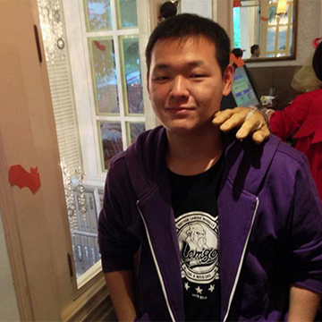
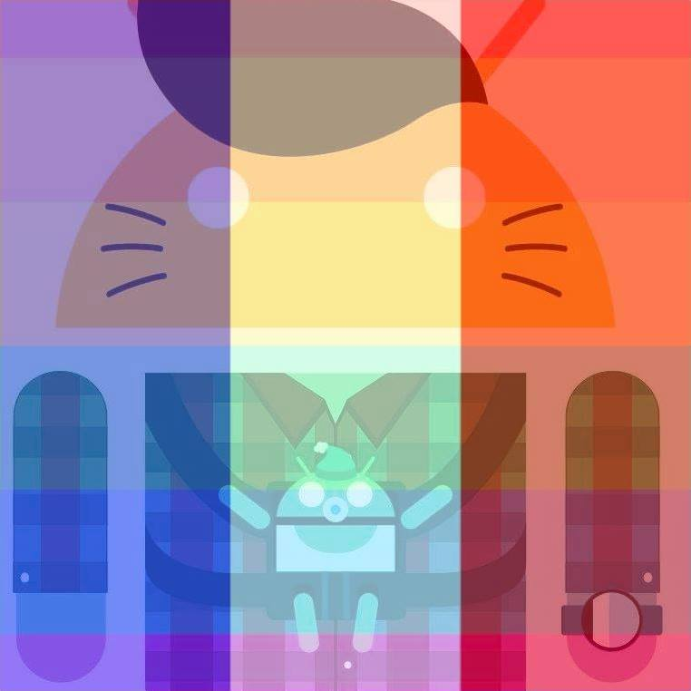

ABOUT
精神
行動科技的進步，開拓一條連結創意和生產力的路徑，帶領我們進入一個充滿無限可能的新境界。
自智慧型手機與穿戴式裝置普及以來，各類如社交、地理資訊、拍照、攝影、共享經濟、行動支付等「軟應用」，紀錄著使用者的生活足跡，眾多世界級科技公司透過手環、手錶、居家感應、醫療收集等「硬載體」，試圖無接縫地收集使用者每分每秒的動態。
在這個資料為王的時代，「軟應用」與「硬載體」正在把每個人納入數據洪流之中，行動科技將是獲取使用者資料的最後一哩，也正是 MOPCON（Mobile / Open / Platform CONference）
專精探討的主軸！
MOPCON「行動科技年會」，今年度將以 "Connect Everything"。作為主要精神意涵。
議程
本屆議程重心除行動開發技術、服務營運、數位內容三大主軸之外，將更廣泛涵蓋雲端運算、穿戴應用、VR 虛擬實境、AR 擴增實境、物聯網應用與基於 HTML5 的可攜式跨裝置應用等相關議題，以真實運作的案例，向與會者做第一手的探討與分享，促進更多優秀開發者項目的成熟與發展。
高鐵 / 火車 / 捷運
- 左營高鐵站 / 高雄火車站搭捷運紅線
- 至捷運美麗島站換乘橘線往西子灣方向
- 捷運鹽埕埔站下車，二號出口步行約 250 公尺可至會場
公車
歷史博物館 0 南 (單邊停靠)、0 北 (單邊停靠)、11、25、33、56、60、76、77、82、建國幹線、91、214、219、248SPEAKER
-
 紐約大學電腦科學博士，曾任職貝爾實驗室與 Google，之後創立台達電子雲端技術中心，2013 年帶領資訊菁英成立和沛科技，提供企業完整的雲端解決方案，2016 年成立和沛移動，開創使用者完美的雲端服務行動體驗。
紐約大學電腦科學博士，曾任職貝爾實驗室與 Google，之後創立台達電子雲端技術中心，2013 年帶領資訊菁英成立和沛科技，提供企業完整的雲端解決方案，2016 年成立和沛移動，開創使用者完美的雲端服務行動體驗。 -
John Chang 目前擔任 AWS Technology Evangelist，對於雲端服務架構以及商務應用發展具有多年實務經驗，曾經擔任架構師、全球雲端合作戰略官、企業應用顧問以及講師。專注在雲端服務 以及與企業應用程式整合的相關技術，以及與技術社群的合作。
-
 國外獨資一間健康食品品牌，台灣擁有兩間合夥品牌公司跟獨資一間系統公司，專長是幫助新創公司優化，成長，行銷跟自動化。
國外獨資一間健康食品品牌，台灣擁有兩間合夥品牌公司跟獨資一間系統公司，專長是幫助新創公司優化，成長，行銷跟自動化。 -
 John is cofounder/CEO of PicCollage, a photo app with 100+ million downloads. He attended Princeton University and Stanford University (Ph.D. EE). He previously worked for a wireless startup that was acquired by Qualcomm.
John is cofounder/CEO of PicCollage, a photo app with 100+ million downloads. He attended Princeton University and Stanford University (Ph.D. EE). He previously worked for a wireless startup that was acquired by Qualcomm. -
在 KKBOX 專職打雜，負責 backend infrastructure 的設計及維運。
-
 在移動互聯網與消費性電子產業，從事用戶體驗設計多年，具有軟體與硬體產品開發的豐富經驗；也曾得過 iF 與 Red Dot 等設計大獎，目前在獵豹移動負責用戶量破億的 Android App「CM Security」介面設計。
在移動互聯網與消費性電子產業，從事用戶體驗設計多年，具有軟體與硬體產品開發的豐富經驗；也曾得過 iF 與 Red Dot 等設計大獎，目前在獵豹移動負責用戶量破億的 Android App「CM Security」介面設計。 -
 資深網站系統工程師，致力於用資訊系統再造既有流程。
資深網站系統工程師，致力於用資訊系統再造既有流程。 -
Takuo Suzuki is Developer Relations Program Manager at Google Inc. He has a keen focus on Material Design. He further engages in UX reviews of apps and further facilitates various design sprints.
-
 設計師出身，後來主要從事 web 方面工作。進入 KKSTREAM 之後開始開發 yapi.js，但仍無法忘情於做出終端用戶能夠直接使用的東西，於是決定加入新產品 KKTV web client 的開發工作。
設計師出身，後來主要從事 web 方面工作。進入 KKSTREAM 之後開始開發 yapi.js，但仍無法忘情於做出終端用戶能夠直接使用的東西，於是決定加入新產品 KKTV web client 的開發工作。 -
現職前端工程師，五倍紅寶石兼任講師，長期專注網頁前端標準技術。
Vue.js 愛好者，曾多次參與前端社群分享心得，期望透過技術也能在傳統產業掀起不同的新浪潮。 -
 擔任捕夢網數位科技 CTO 技術長。熟悉雲端運算技術 & 雲端未來發展，破除企業對於雲端不實的幻夢，以穩健踏實的方式，輔導眾多企業從傳統 IT 躍升雲端未來。在企業 IT 轉變與成長的過程，扮演了在背後提供了許多技術及硬體奧援的角色。
擔任捕夢網數位科技 CTO 技術長。熟悉雲端運算技術 & 雲端未來發展，破除企業對於雲端不實的幻夢，以穩健踏實的方式，輔導眾多企業從傳統 IT 躍升雲端未來。在企業 IT 轉變與成長的過程，扮演了在背後提供了許多技術及硬體奧援的角色。 -
 目前在 YAHOO 擔任 Mobile App Engineer，曾參與超級商城開發、協助拍賣、購物中心的 iOS App 上線。喜歡用程式玩出更多有趣的 UI 和效果。
目前在 YAHOO 擔任 Mobile App Engineer，曾參與超級商城開發、協助拍賣、購物中心的 iOS App 上線。喜歡用程式玩出更多有趣的 UI 和效果。 -
 玉樹臨風，風度翩翩又喜歡吃喝的 Yahoo Mobile App Engineer。參與過多個 Yahoo Mobile App 的開發。日常除了寫 App 外，對自然語言處理、前端、瀏覽器插件等技術亦稍有涉略。最近正在研究如果吃了無敵星星之後該如何不照正常的路數玩遊戲。
玉樹臨風，風度翩翩又喜歡吃喝的 Yahoo Mobile App Engineer。參與過多個 Yahoo Mobile App 的開發。日常除了寫 App 外，對自然語言處理、前端、瀏覽器插件等技術亦稍有涉略。最近正在研究如果吃了無敵星星之後該如何不照正常的路數玩遊戲。 -
 大三就半路出家的創業者，充滿著改變世界的熱情，2014 年開創 Colorgy 品牌，希望翻轉校園、創造年輕人的產品。主要負責帶領團隊規劃未來方向跟營運策略，專注在如何讓使用者愛上我們，熱愛聊天、與人分享交流。希望瞭解更多故事來填滿對世界的求知慾！
大三就半路出家的創業者，充滿著改變世界的熱情，2014 年開創 Colorgy 品牌，希望翻轉校園、創造年輕人的產品。主要負責帶領團隊規劃未來方向跟營運策略，專注在如何讓使用者愛上我們，熱愛聊天、與人分享交流。希望瞭解更多故事來填滿對世界的求知慾！ -
爸爸, 碼農 熱愛 Mobile 開發
-
 王銓彰於虛擬實境與擴增實境領域研發超過 10 年以上，同時也是動畫及遊戲開發業界的風雲人物。他曾研發多套遊戲引擎，是動新聞快速動畫製作技術的發明者，深耕之路上更有和產官學各界合作的豐富經驗。
王銓彰於虛擬實境與擴增實境領域研發超過 10 年以上，同時也是動畫及遊戲開發業界的風雲人物。他曾研發多套遊戲引擎，是動新聞快速動畫製作技術的發明者，深耕之路上更有和產官學各界合作的豐富經驗。 -
 我喜歡好的產品，也開發好的產品；我寫的不是程式，是理想。
我喜歡好的產品，也開發好的產品；我寫的不是程式，是理想。 -
 嫁給 RD 的 UI Designer。
嫁給 RD 的 UI Designer。 -
 目前任職於 PayEasy，五年經驗的 Android 開發者，目前熱衷研究各種跨平台技術的無限可能，業餘時間也致力於將技術回饋社會的想法，開發找廁所 App，造福行動不便者找廁所無障礙。
目前任職於 PayEasy，五年經驗的 Android 開發者，目前熱衷研究各種跨平台技術的無限可能，業餘時間也致力於將技術回饋社會的想法，開發找廁所 App，造福行動不便者找廁所無障礙。 -
 目前為台灣安全聯盟理事長，並服務於國家高速網路與計算中心，亦為 The Honeynet
目前為台灣安全聯盟理事長，並服務於國家高速網路與計算中心，亦為 The Honeynet
Project 台灣分會負責人、TWCSIRT 團隊負責人，熟悉資訊安全領域技術，涵蓋系統安全、網路安全、管理制度、資訊探勘與數位鑑識等領域，目前已有 34 本電腦資訊圖書著作。 -
 目前現職服務於雅虎奇摩，負責帶領超級商城與拍賣 APP 開發，
目前現職服務於雅虎奇摩，負責帶領超級商城與拍賣 APP 開發，
專注在專案軟體架構規劃與開發，熱愛分享自己的經驗。
具備 10 年以上的專案開發經驗，
7 年的專業講師資歷，
開發的 Magic Shutter 曾獲得 NewYork Times 推薦最佳前十大攝影軟體推薦。 -
 OSDC.tw 2006-2014，開放原始碼愛好者。現正進行媒體 open source 實驗。
OSDC.tw 2006-2014，開放原始碼愛好者。現正進行媒體 open source 實驗。 -
 I belong to the Tokaido Linux User Group in Japan. I'm hacking the ARM Linux in the user point of view.
I belong to the Tokaido Linux User Group in Japan. I'm hacking the ARM Linux in the user point of view. -
 遊戲製作人、作曲家以及軟體工程師，任職於臺灣遊戲開發商希娜科藝，目前身兼遊戲製作人與執行長的工作，代表作為《境界之詩》。
遊戲製作人、作曲家以及軟體工程師，任職於臺灣遊戲開發商希娜科藝，目前身兼遊戲製作人與執行長的工作，代表作為《境界之詩》。
畢業於國立東華大學資訊工程研究所，於四年前碩士班研究所畢業的時候，創設遊戲開發公司希娜科藝。 -
中華民國 App 跨界交流協會 理事長
台灣防災產業協會 常務理事／地震災害防制委員會 主委
開放資料聯盟 副會長／App應用召集人
交通部／經濟部／環保署 政府資料開放諮詢小組 委員
AppDC 台灣 App 開發者社群 共同發起人 -
 劉于遜於 2011 年創立歐酷網路，2013 年推出 CHOCOLABS 致力於優質 App 研發及推廣，累積超過 29 支冠軍作品，達到 800 萬次下載及每月 200 萬活躍使用者；目前公司主打影劇產品並推出自製戲劇，經營影音平台欲成為台灣新媒體力量；也盼將模式複製到東南亞市場達到品牌全球化。
劉于遜於 2011 年創立歐酷網路，2013 年推出 CHOCOLABS 致力於優質 App 研發及推廣，累積超過 29 支冠軍作品，達到 800 萬次下載及每月 200 萬活躍使用者；目前公司主打影劇產品並推出自製戲劇，經營影音平台欲成為台灣新媒體力量；也盼將模式複製到東南亞市場達到品牌全球化。 -
 三竹資訊出包工程師
三竹資訊出包工程師
透過不斷的出包來攝取經驗值
對於買書有莫名的熱愛
專長是與別人交流書單
在網路上撰寫部落格，來達到誤人子弟的效果（？） -
Cori 是台灣 VR/AR 產業前瞻推手，產業人稱「VR 教母」。2016 年 Cori 推動「TAVAR 台灣虛擬及擴增實境產業協會」成立，目前擔任協會秘書長，致力推動產業生態圈發展。Cori 也創辦喜杰思互動科技公司，專注連結台灣與中國、矽谷行業資源，協助台灣業者走向國際。
-
 喜歡前端、Serverless，最近也迷上了自然語言處理。 I'm a false positive front-end engineer.
喜歡前端、Serverless，最近也迷上了自然語言處理。 I'm a false positive front-end engineer. -
台灣大學資訊工程博士，曾任大學教授、鴻海創新數位系統事業群資深處長等職務，現為和沛移動技術長，專長涵蓋 Embedded Linux（Android & Firefox OS），及平行與分散式系統，具有技術觀察力與實際規劃力，是台灣開源軟體與 Linux、Android、Firefox OS 等作業系統核心技術的先驅者。
-
 作為一個 Unity 原廠講師，Kelvin 致力於將 Unity 開發技術有效的傳達給開發者。待過遊戲研發 13 年，同時也是個資深玩家的他，認為台灣開發者最大問題並非技術，更多是需要出來交流。他很樂意協助台灣開發者，在遇到問題除了 Google 之外，能有更多管道解決。
作為一個 Unity 原廠講師，Kelvin 致力於將 Unity 開發技術有效的傳達給開發者。待過遊戲研發 13 年，同時也是個資深玩家的他，認為台灣開發者最大問題並非技術，更多是需要出來交流。他很樂意協助台灣開發者，在遇到問題除了 Google 之外，能有更多管道解決。 -
 Kaz Sato is Staff Developer Advocate at Cloud Platform team, Google Inc. He leads the developer advocacy team for Machine Learning and Data Analytics products and gives talks at many major events like Google I/O 2016.
Kaz Sato is Staff Developer Advocate at Cloud Platform team, Google Inc. He leads the developer advocacy team for Machine Learning and Data Analytics products and gives talks at many major events like Google I/O 2016. -
 在台灣推動 EPUB 3 電子書格式與數位出版改革，目前為大塊文化與台灣漫讀（BookWalker Taiwan）的顧問。2013年起參與 W3C 活動，為中文排版需求（CLREQ）的編輯與邀請專家。希望能夠改善中文電子書與 Web 內容的排版表現，保留傳統並提高使用者閱讀體驗。
在台灣推動 EPUB 3 電子書格式與數位出版改革，目前為大塊文化與台灣漫讀（BookWalker Taiwan）的顧問。2013年起參與 W3C 活動，為中文排版需求（CLREQ）的編輯與邀請專家。希望能夠改善中文電子書與 Web 內容的排版表現，保留傳統並提高使用者閱讀體驗。